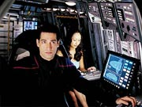
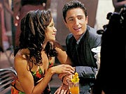
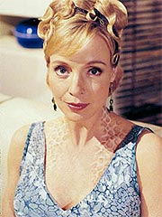
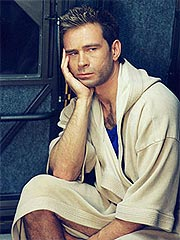
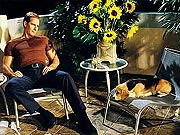
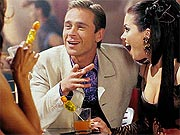
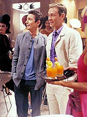

Episódio
anterior | Próximo
episódio
Sinopse:
Finalmente chegando a Risa, a
tripulação da Enterprise imediatamente se prepara para uma
merecida licença no paraíso tropical por dois dias e duas
noites. Como parte da tripulação precisa ficar a bordo e manter
a nave em operação, o capitão Archer decide por sorteios para
determinar quem terá licença. Ele acaba sendo um dos felizardos,
mas se sente culpado e preocupado por descansar enquanto outros
estarão trabalhando.

Aliviado
por T'Pol permanecer a bordo, o capitão finalmente concorda em
tomar o shuttlepod e ir com Trip, Reed, Mayweather e Hoshi para s
uperfície. Todos parecem ter diferentes planos para gastar seu
curto tempo no planeta: Mayweather planeja escalar em uma encosta
que muda os pontos de apoio enquanto você escala; Trip e Reed
pretendem conhecer algumas fêmeas alienígenas e "alargar
seus horizontes culturais"; Hoshi sente que passou muito
tempo dependente do tradutor universal e decide colocar suas
habilidades linguísticas à prova com os vários alienígenas que
ela espera encontrar; Archer pretende apenas relaxar em um pequeno
apartamento com vista para o mar, lendo um bom livro e tendo a
companhia de Porthos. Logo que o shuttlepod aterrissa, cada um
parte em seu próprio caminho.

Logo
que chega em seus aposentos, Archer descobre um livro Vulcano
embrulhado --um presente deixado por T'Pol para o capitão.
Positivamente impressionado, Archer caminha até a sacada para
observar a incrível paisagem local e nota uma bonita alienígenas
e seu cachorro no apartamento logo abaixo do seu. Seus olhos se
encontram por um momento, e Archer sente a possibilidade de um
elemento romântico inesperado.
Mais tarde, Archer ouve Porthos rosnando, em resposta à presença
do cachorro da mulher, que apareceu por lá. Quando a mulher
encontra seu cão, Archer aproveita a oportunidade para puxar
conversa. Os dois se entrosam e o capitão descobre que seu nome
é Keyla, e que é a primeira visita dela a Risa. Ele a convida
para jantar, mas ela hesita, dizendo ter um compromisso e marcando
para o dia seguinte.
Mais tarde, enquanto Archer está em sua sacada com um telescópio
observando as estrelas, ele é surpreendido por Keyla, que diz ter
cancelado seu outro compromisso. Os dois conversam amigavelmente
sobre seus mundos e passados, mas Archer sente uma forte hesitação
de Keyla em dividir os detalhes de seu próprio passado.
Continuando a conversa no café da manhã do dia seguinte, Archer
descobre que os Sulibans massacraram a família inteira de Keyla.
Quando o capitão admite que já encontrou os Sulibans, ela o
enche de perguntas.

Hesitante
em revelar qualquer informação privilegiada, Archer fica
surpreso com a tenacidade de Keyla. Sentindo algo suspeito, o
capitão discretamente toma uma leitura biológica da mulher e
envia os dados para análise na Enterprise. Confirmando as
suspeitas, o resultado mostra que Keyla é na verdade uma Tandaran,
a mesma espécie que injustamente mantinha Sulibans inocentes em
um campo de concentração. Confrontando Keyla com a verdade,
Archer se recusa a deixá-la sair até que ela diga quem a mandou.
Mas suas questões ficam sem resposta quando Keyla injeta nele uma
espécie de anestésico e o deixa inconsciente. Acordando pela
manhã, o capitão descobre que Keyla já se foi e com tristeza
arruma suas coisas para voltar à Enterprise.
Enquanto isso, Hoshi encontra um simpático casal e pratica com
eles um pouco da língua Risan em um restaurante. Quando o casal a
deixa, Hoshi é interpelada por um simpático alienígena que não
pôde evitar ouviar a conversa dela. Apresentando-se como Ravis,
os dois começam a conversar, e ele imagina se ela tenha
encontrado alguma língua que não pudesse aprender. Segundo ele,
sua língua natal era muito complexa. Depois de pronunciar algumas
palavras, Hoshi fica intrigada pelo desafio e pede que ela o
ensine. Os dois ficam nisso até a noite, quando ela desiste de
aprender.
Vendo que a alferes está um pouco tensa, Ravis a convida para ir
com ele às piscinas de vapor exóticas que há em Risa. Um pouco
nervosa, Hoshi se rende ao 'carpe diem' e aceita o convite. Na
manhã seguinte, Hoshi acorda com um satisfeito Ravis ao seu lado,
na cama. Triste por ter de partir de volta para a Enterprise,
Hoshi dá adeus a sua surpreendente paixão.
Em outra parte, Trip e Reed vão a uma agitada boate, cheia de exóticas
fêmeas alienígenas de todo tipo. Os dois têm problemas em
escolher suas presas, quando rapidamente a decisão é feita por
duas lindas mulheres que os acompanham em um drink. Se
apresentando como Dee'Ahn e Latia, as duas mulheres acham tudo
sobre Trip e Reed fascinante. Após várias rodadas de drinks
Risans, as mulheres convidam os quase bêbados Reed e Trip para
ver os jardins subterrâneos, cheios com formas de vida
luminescentes. Deixando as mulheres mostrarem o caminho, Reed e
Trip são levados ao porão do bar. Sentindo algo estranho, Reed
pergunta às garotas como um porão poderia levar a um jardim,
quando elas se viram e exigem todos os bens valiosos dos dois.
Ainda chocados e embriagados, Reed e Trip entendem rapidamente do
que se trata quando as "garotas" se transformam na
frente deles em dois alienígenas grotescos e decididamente
masculinos. Com um tiro de feiser à queima-roupa, os dois
tripulantes da Enterprise são postos fora de combate e deixados
amarrados em um poste, apenas com as roupas de baixo.

Acordando
na manhã seguinte com uma ressaca monumental, Trip e Reed se vêem
sozinhos após o clube fechar. Preferindo não serem descobertos
pelo capitão amarrados e com a roupa de baixo, os dois passam o
dia tentando encontrar um meio de fugir. Eventualmente, quebrando
uma garrafa próxima, eles conseguem se libertar, saindo semi-nus
pelo bar e voltando ao hotel, só para pegar as coisas e voltar à
Enterprise.
Na enfermaria, o doutor Phlox se prepara para entrar em sua
hibernação anual. Normalmente compreendido por seis dias de sono
por ano, o período de descanso pode ser reduzido para dois sem
grandes problemas, segundo o médico. A tripulante Cutler ficou a
cargo de quaisquer emergências médicas nesse meio tempo. Embora
não fosse prejudicial acordá-lo no meio da hibernação, ele diz
que poderia ser muito incômodo e que ele preferiria que não
acontecesse a não ser que fosse extremamente necessário.
Tudo vai bem, até Mayweather contatar a Enterprise e pedir que um
shuttlepod vá buscá-lo, após um acidente na escalada. Ele
primeiro foi levado a um hospital Risan, mas o humano se sentiu
desconfortável sendo tratado por um médico que nunca havia
ouvido falar de um humano antes, e quis ver o dr. Phlox.
Após voltar à Enterprise, Mayweather fica nervoso com a ausência
de Phlox, mas Cutler garante que pode lidar com sua perna
quebrada. O alferes também nota algum problema para respirar, e
Cutler descobre que ele está tendo uma reação ao analgésico
que tomou no hospital Risan. A reação de Mayweather piora e isso
obriga Cutler e T'Pol a acordarem Phlox.
Embora ele acorde, o médico se sente extremamente desorientado e
um estado de alucinação, por ter sido chamado prematuramente.
Com a assistência de Cutler e T'Pol, um desnorteado Phlox
consegue chegar à enfermaria e diagnosticar Mayweather. Apesar de
sua confusão mental, o médico determina o problema e cria um antídoto
para a reação do alferes. Uma vez concluído o tratamento,
Mayweather já começa a se recuperar e Phlox volta a hibernar.
Comentários:
"Two Days and Two Nights" tem como
objetivo servir como alívio cômico antes da tensa conclusão da
temporada. Nesse sentido, o episódio é extremamente
bem-sucedido, além de incluir alguma tensão dramática.
Claro, a premissa parece até redação de primário: "minhas
férias". A idéia é mostrar como os tripulantes da
Enterprise vão buscar se divertir em um planeta-paraíso, e ao
mesmo tempo introduzir na série um velho conhecido dos fãs de Jornada:
o planeta Risa.
Acompanhando várias trajetórias diferentes (Archer decide se
recolher ao sossego do planeta, Trip e Reed vão à "caça",
Hoshi quer aprender línguas e Mayweather vai escalar), fica
impossível fazer uma grande ou emocionante história. Mas nem
esse é o objetivo; ao contrário, Enterprise inaugura aqui
um estilo diferente de segmento: o episódio de anedotas.

O
próprio título é sugestivo: pouca coisa espetacular pode
acontecer em um planeta-paraíso durante "Dois Dias e Duas
Noites". O curioso é que, mesmo segmentando o episódio em
anedotas, algumas não têm espaço algum. Claro que quem paga o
pato é Mayweather, que, além de bancar o paspalho mais uma vez
se contundindo, ainda nem aparece escalando em Risa. O alferes só
dá o ar da graça quando volta à Enterprise, ferido.
O trecho dedicado a Trip e Reed é bem interessante, porque
reflete um aspecto mais mundano dos personagens de Enterprise,
do qual carecem os tripulantes das outras séries. Os dois
buscando diversão em night clubs e sendo enganados por
assaltantes metamorfos, perdendo suas roupas e ficando presos em
um porão durante toda a licença é garantia de diversão. Além
de engraçado, o trecho também reforça a amizade e os interesses
comuns de Trip e Reed, algo que começou com o excelente "Shuttlepod
One".

A
sequência de Hoshi é importante não só para estabelecer a
qualificação da tripulante como linguista, mas para enfatizar o
fato de que seu interesse não é só profissional; estudar línguas
e estar na Enterprise para isso é sua maior paixão. Interessante
ver que isso leva a um envolvimento afetivo com um alienígena
que, além de simpático, apresenta a ela um desafio linguístico
à altura de suas capacidades. Ironicamente, ela foi a Risa
procurando mais trabalho e encontrou diversão e contentamento. Em
contrapartida, Reed e Trip procuravam só diversão fácil e o que
conseguiram foi se meter em encrencas.
Completando a condução do episódio no planeta, há uma trama
envolvendo Archer. O capitão pretende só sentar, olhar a praia,
as estrelas e relaxar. Mas então conhece uma atraente mulher, e
os dois começam a se envolver. Daí surge a única real ocorrência
relevante do episódio para o contexto da série --acaba que a
mulher é uma espiã dos Tandarans (vistos no episódio "Detained")
que quer arrancar mais informações de Archer sobre a Cabal, os
Sulibans e a Guerra Fria Temporal.

A
descoberta é agradável não só por fornecer alguma emoção a
um episódio aparentemente 100% inofensivo, mas também por
introduzir um senso de continuidade da série como um todo visto
raras vezes na história do franchise (e na maioria delas em Deep
Space Nine). A referência é totalmente obscura para quem não
viu "Detained", mas para
esses existe todo o resto do episódio. Essa pequena (mas
relevante) inclusão dá um sabor especial ao segmento.
Por fim, a bordo da Enterprise, temos uma aparição residual de
T'Pol, assim como a provável última aparição da alferes Cutler
em Enterprise por um bom tempo, e um momento "Neelix"
para o doutor Phlox.
Desde o início da série, todos temiam que o bom doutor pudesse
se tornar um personagem similar a Neelix, de Voyager --o
pateta da nave. Felizmente, a habilidade de John Billingsley fez
com que seu personagem não só fugisse desse estigma, mas se
transformasse num dos mais interessantes da série.
Depois de uma temporada em que vimos o potencial de Phlox, seu uso
como alívio cômico foi bastante inofensivo em termos de
prejudicar a credibilidade do personagem. Além disso, o fato de
Phlox hibernar já havia sido estabelecido antes (em "Dear
Doctor") e as reações do médico ao ser acordado
subitamente não são muito diferentes das de uma pessoa normal, só
que elevadas a uma potência ou duas. E o resultado é
simplesmente hilariante.
Em termos de execução, temos paisagens de Risa que, embora
bonitas, gritam "CGI" para a audiência a maior parte do
tempo. A vista da sacada de Archer é talvez a menos convincente
paisagem feita por computador de toda a série até aqui. A direção
é discreta, assim como a música. Nas atuações, o destaque fica
para Billingsley, mostrando toda a sua veia cômica.
"Two Days and Two Nights" é um episódio leve e
serve como um prelúdio para a forte conclusão que teria a
primeira temporada de Enterprise. Entretenimento garantido
ou seus 45 minutos de volta.
Citações:
Tucker - "There’s
definitely been a misunderstanding."
("Definitivamente, houve um mal-entendido.")
T'Pol - "You don’t sound very relaxed, captain."
("Você não parece muito relaxado, capitão."
Hoshi - "As a matter of fact, I learned several new
conjugations."
("Para falar a verdade, eu aprendi várias conjugações
novas.")
Trivia:
 Dominic Keating foi um dos que comentou sobre o episódio. "Connor
[Trinneer] e eu buscamos alguma diversão... ou problemas. E tudo
não é como parece", ele diz.
Dominic Keating foi um dos que comentou sobre o episódio. "Connor
[Trinneer] e eu buscamos alguma diversão... ou problemas. E tudo
não é como parece", ele diz.
Kellie Waymire já havia aparecido duas vezes em Enterprise
como a tripulante Cutler. Antes disso, ela já havia interpretado
Lanya, em "Muse" (Voyager).
Joseph Will também já havia aparecido em "Muse",
de Voyager, como Kelis. Ele também fez uma aparição em "Workforce,
Part II", de Voyager, como um oficial de segurança,
e como Rostov, em "Vox Sola",
de Enterprise.
O material de imprensa desse episódio listava o ator Dennis
Cockrum como o intérprete do personagem "Freebus". O
episódio, entretanto, não mostra nenhuma cena dele, ou mesmo o
lista nos créditos, fazendo supor que sua aparição tenha sido
cortada. Ele já interpretou antes em Jornada, aparecendo
como um capitão em "Face
of the Enemy", de A Nova Geração, e Orek, em
"Live Fast and Prosper", de Voyager.
Geoff Meed já fez as vozes de dois personagens no jogo de
computador de Voyager, "Elite Force": Tom Odell e
um Malon. Dey Young apareceu antes em "The
Masterpiece Society" (A Nova Geração), como
Hannah Bates, e em "A Simple Investigation" (Deep
Space Nine), como Arissa.
O episódio marca a primeira aparição do planeta-paraíso Risa.
O diretor é uma figura famosa entre os fãs. Michael Dorn
interpretou o Klingon Worf, em A Nova Geração e Deep
Space Nine.
Ficha
técnica:
História de Rick Berman
& Brannon Braga
Roteiro de Chris Black
Direção de Michael
Dorn
Exibido em 15/05/2002
Produção:
025